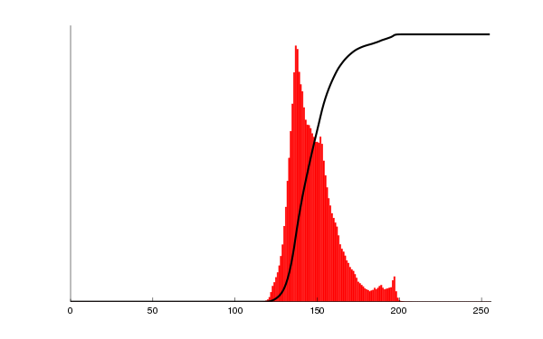

Enhancing image contrast is a common task in Photoshop to improve the image quality, and to improve the image beauty. Let's look at 2 images below.


Obviously, the second image looks more attractive than the "boring" image. One method of enhancing contrast is Histogram Euqalization. Of course, there are tons of more powerful algorithms designed by Adobe and other companies. However, I choose to talk about this algorithm because it is a good example to teach people what histogram is and how to read it.

Histogram Sample of an Image
In Computer Vision, every image is composed of pixels that every color of pixels ranges from 0 to 255 (0 is darkesst and 255 is brightest).
A color mode of images are RGB (e.g. 3 color channels of Reg-Green-Blue).
In the histogram sample, the vertical axis represent the number of pixels and the horizontal axis represents brightness of a color channel.
The histogram of an image tells how the color strength and the color distribution in the image.
In the histogram sample, it has the bell shape that red columns are closely placed in the center (150 - 200). This observation
tells me that pixels in the image are not clearly different in colors. In other words, the image contrast is low.
Want to enhance the image contrast
The histogram sample shows that the low image contrast is due to the closely-packed distribution of the color frequency. In order to increaes the image contrast,
the color frequency (histogram) must be stretched out so that the colors of pixels are apart from others. In other words, pixels will have clearly different colors.
Histogram and Image sample after Histogram Equalization
Steps to perform Histogram Equalization